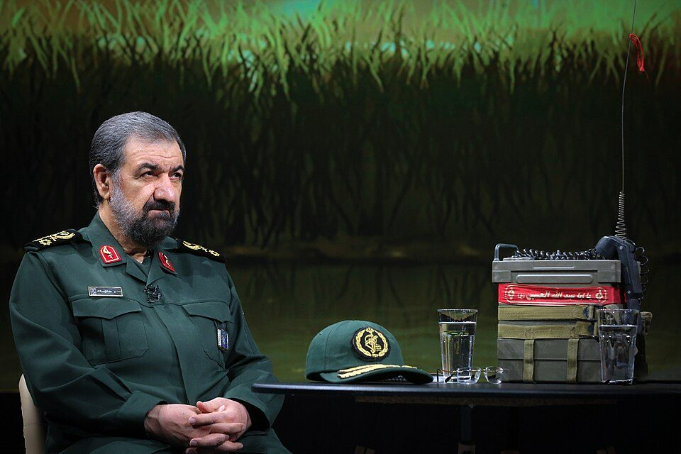

İran'dan Avrupa'daki ABD üslerine koşullu uyarı: Rızai'nin açıklaması ne anlama geliyor?
İran Ulusal Güvenlik Yüksek Konseyi Sekreteri Muhsin Rızai, ABD'nin Avrupa'daki askerî üslerini İran'a yönelik saldırılarda kullanması hâlinde bu tesislerin de hedef alınabileceğini söyledi. Tahran'ın mesajı, Avrupa ülkelerini doğrudan savaşa girmiş taraflar olarak tanımlamaktan ziyade, ABD'ye sağlayacakları askerî desteğin sonuçları olacağı uyarısına dayanıyor.
Kaynak: Reuters, 11 Kasım 2026 – İran'ın zenginleştirilmiş nükleer materyal açıklaması ve ABD üslerine yönelik uyarı, Euronews, 4 Kasım 2026 – İranlı milletvekilinin Avrupa'daki ABD üslerine ilişkin açıklamas

İran Ulusal Güvenlik Yüksek Konseyi Sekreteri Muhsin Rızai, ABD'nin Avrupa'daki askerî üslerini İran'a yönelik saldırılarda kullanması hâlinde bu tesislerin de hedef alınabileceğini söyledi. Tahran'ın mesajı, Avrupa ülkelerini doğrudan savaşa girmiş taraflar olarak tanımlamaktan ziyade, ABD'ye sağlayacakları askerî desteğin sonuçları olacağı uyarısına dayanıyor.
İran'ın Avrupa'ya yönelik askerî mesajı 11 Kasım'da yeniden gündeme geldi. Ulusal Güvenlik Yüksek Konseyi Sekreteri Muhsin Rızai, Lübnan merkezli Al Mayadeen televizyonuna verdiği röportajda, ABD'nin İran'a yeni bir saldırı düzenlemesi durumunda yalnızca bölgedeki yakın askerî tesislerin değil, daha uzaktaki Amerikan üslerinin de hedef alınabileceğini söyledi. Rızai, bu kapsamda Avrupa ülkelerinde bulunan ABD üslerini de andı.
Reuters'ın aktardığı açıklamada Rızai, Avrupa'daki üslerin İran'a yönelik saldırılarda kullanılması durumunda bunların da karşılık verilecek hedefler arasında yer alacağını belirtti. Ancak açıklamada hangi ülkelerin veya tesislerin kastedildiğine ilişkin bir liste verilmedi.
Bu ayrıntı önemli. Çünkü İran'ın açıklaması, Avrupa'daki bütün ABD askerî varlığını koşulsuz biçimde hedef ilan etmekten farklı. Rızai'nin çizdiği sınır, üslerin İran'a karşı bir saldırıda kullanılması üzerine kuruluyor. Dolayısıyla açıklama, mevcut durumda verilmiş bir saldırı kararı değil; olası bir Amerikan operasyonuna bağlanan askerî misilleme uyarısı.
Bu mesaj ilk kez mi veriliyor?
Hayır. İran'dan benzer yönde açıklamalar daha önce de geldi.
4 Kasım'da İran Parlamentosu Ulusal Güvenlik Komisyonu üyesi Ahmad Bakhshayesh Ardestani, Euronews'e verdiği demeçte, ABD'nin Avrupa'daki üslerini İran'a karşı kullanması hâlinde İtalya ve Almanya gibi ülkelerdeki tesislerin de hedef alınabileceğini söylemişti.
Bu kez açıklamanın daha üst düzey bir güvenlik yetkilisinden gelmesi dikkat çekiyor. Ancak iki açıklama arasında kurumsal ağırlık farkı bulunması, İran'ın kesinleşmiş bir askerî karar aldığı anlamına gelmiyor. Kamuoyuna yansıyan beyanlar, Tahran'ın olası bir çatışmanın kapsamına ilişkin mesajlarını gösteriyor; operasyonel bir kararın alındığını kanıtlamıyor.
Avrupa'nın karşı karşıya olduğu asıl soru
Avrupa ülkeleri açısından mesele, yalnızca ABD askerlerinin kıtada bulunması değil. Bu askerî varlığın hangi koşullarda ve hangi amaçla kullanılacağı da belirleyici.
Bir ülkenin topraklarında ABD askerî tesisinin bulunması, o ülkenin İran'a karşı yürütülecek bir operasyona otomatik olarak katıldığı anlamına gelmez. Fakat bu tesislerin İran'a yönelik saldırılarda kullanılması, ev sahibi ülkeyi diplomatik ve güvenlik bakımından daha zor bir konuma taşıyabilir.
Bu nedenle Tahran'ın mesajı, Avrupa başkentlerine de yöneltilmiş bir uyarı niteliği taşıyor: ABD'nin askerî faaliyetlerine sağlanacak desteğin, İran tarafından tarafsız bir lojistik katkı olarak görülmeyebileceği belirtiliyor.
NATO'nun daha önceki açıklamaları da bu tartışmanın tamamen yeni olmadığını gösteriyor. İttifak, 19 Ağustos 2026'da Anadolu Ajansı'na yaptığı açıklamada, İran kaynaklı olası tehditlere karşı müttefiklerini savunmaya hazır olduğunu bildirmişti. Ancak bu açıklama, Rızai'nin 11 Kasım'daki sözlerine verilmiş güncel bir yanıt değil; önceki gerilim dönemine ait bir değerlendirme.
İngiltere'deki askerî hareketlilikle doğrudan bağlantı kurulamıyor
Son günlerde İngiltere'deki ABD askerî varlığına ilişkin gelişmeler de dikkat çekti. Washington Post'un 10 Kasım tarihli haberine göre, İngiltere'deki Mildenhall Hava Üssü'nden bazı Amerikan askerî uçakları başka noktalara taşındı. Haberde üç Osprey helikopteri ile on yakıt ikmal uçağının farklı üslere yönlendirildiği belirtildi.
Wall Street Journal, uçakların İran kaynaklı bir tehdit sonrasında taşındığını bildirmişti. Ancak Washington Post'un aktardığına göre ABD Avrupa Komutanlığı, hareketliliğin gerekçesi hakkında yorum yapmadı; askerî uçakların eğitim ve operasyonel ihtiyaçlar nedeniyle farklı tesisler arasında düzenli olarak yer değiştirdiğini açıkladı. İngiltere Savunma Bakanlığı da başka ülkelerin askerî faaliyetleri hakkında yorum yapmadı.
Bu nedenle İngiltere'deki uçak hareketliliğini doğrudan Rızai'nin açıklamasının sonucu olarak göstermek mümkün değil. İki gelişme aynı güvenlik gündeminde yer alsa da aralarında doğrulanmış bir neden-sonuç ilişkisi bulunmuyor.
Açıklama diplomatik sürecin hangi aşamasında geldi?
Rızai'nin Avrupa'daki üslerle ilgili sözleri, ABD ile İran arasında müzakerelerin geleceğinin belirsiz olduğu bir dönemde geldi. Reuters'ın 11 Kasım tarihli haberine göre Rızai, Washington ile şu anda doğrudan bir müzakere yürütülmediğini söyledi. İran tarafı, ABD'nin daha önce iletilen yedi koşula açık yanıt vermesini beklediğini belirtiyor.
Nükleer program da anlaşmazlığın merkezindeki konulardan biri olmaya devam ediyor. Rızai, zenginleştirilmiş nükleer materyalin ülke dışına çıkarılmasına izin vermeyeceklerini ifade etti. ABD ise İran'la yapılacak olası ilk görüşmelerde nükleer konunun ele alınması gerektiğini savunuyor.
Bu tablo, askerî açıklamanın diplomatik gerilimden bağımsız okunamayacağını gösteriyor. Tahran bir yandan müzakere koşullarını gündemde tutarken diğer yandan olası yeni saldırıların coğrafi kapsamının genişleyebileceği mesajını veriyor.
Avrupa'dan yeni bir karşılık gelecek mi?
11 Kasım itibarıyla incelediğimiz kaynaklarda Rızai'nin son açıklamasına doğrudan verilmiş yeni bir NATO veya Avrupa Birliği yanıtına rastlanmadı. NATO'nun ağustos ayındaki açıklaması mevcut olmakla birlikte, bunu bugünkü beyana verilmiş bir karşılık olarak değerlendirmek doğru olmaz.
Önümüzdeki süreçte üç gelişme izlenmeli: Avrupa ülkelerinin ABD üslerinin kullanımına ilişkin tutumları, NATO'nun yeni açıklamaları ve Washington ile Tahran arasında müzakere kanallarının yeniden açılıp açılmayacağı.
Rızai'nin sözleri, Avrupa'daki ABD askerî varlığının İran-ABD geriliminde nasıl bir rol oynayabileceğine ilişkin tartışmayı yeniden gündeme taşıdı. Ancak bugün itibarıyla Avrupa'daki bir ABD üssüne yönelik yeni bir İran saldırı kararı açıklandığına dair doğrulanmış bilgi bulunmuyor.